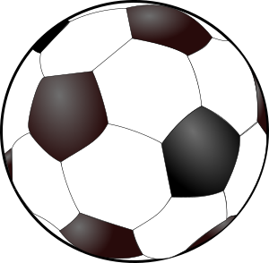

The Premier League season is just about one third of the way done. Through one third of the season, the title race has stayed very close. With a battle for top four brewing to secure a Champions League spot. Here is a rundown of the top four teams so far -
- Liverpool sits on top of the table. They are a surprise to this top four list. Jurgen Klopp took over the team last season and led the team to an abysmal eighth place finish. Klopp has worked his magic this season, with his team playing their intense high-press football to perfection. This has allowed the team to come away with some big wins already this season, and to sit atop the table after eleven games.
- Chelsea are another surprise this season sitting one point behind Liverpool in second. This is Antonio Conte's first season in charge at Chelsea, taking over a team many people thought was in ruins. Conte used his summer wisely and picked up David Luiz to help fill the three centre defender spots that play in his formation. Conte has his team playing very well, and if they continue the form that they are in, then they may soon surpass Liverpool and run away with the league.
- Manchester City finally acquired the manager that they have been "looking for" for the past few seasons. City hired Pep Guadirola, arguably the best coach in football, this season and signed many key plays. With the help of new signings, İlkay Gündoğan and Nolito, City is firing at all cylinders and was top of the table up until last weekends games. Expect Manchester City to compete for the title, and to maybe even surprise a few teams in the Champions League.
- Arsenal have the longest tenured coach in the Premier League in Arsene Wenger. Wenger has been in charge of Arsenal since 1996. Although Arsenal and Wenger had a lot of success in the early 2000's, they have not had much success lately. Arsenal is led by forward Alexis Sánchez and attacking midfielder Mesut Özil. Both of their leaders are off to a good start and the team is preforming well, but look to Arsenal to start dropping some games later in the season, as they have the past ten years.
|
 |